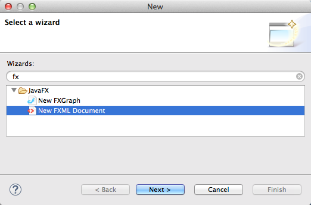
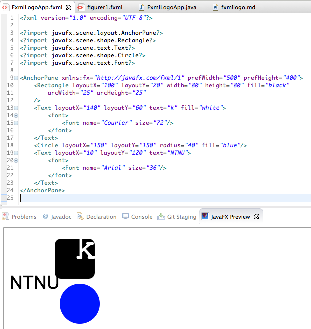

Formålet til denne leksjonen er å lære hvordan du kan bruke FXML for å lage skjerminnhold, og to måter å lage slikt innhold. I tillegg skal du lære hvordan du får app-en til å last inn og vise frem innholdet i FXML-filer.
I leksjonen Hello world lærte du om hvordan du kan lage en app som viste et vindu med et tekst-objekt (av type Text). Da skrev du Java-kode som laget tekst-objektet, satte grafiske egenskaper for tekst.objektet og la det til app-vinduet. Slik kode kan fort bli lang og uoversiktlig, og det kan være vanskelig å skrive kode som har ønsker effekt og se for seg hvordan skjerminnholdet vil bli seende ut.
For å gjøre arbeidet med skjerminnhold enklere, så finnes det en egen kode-type kalt FXML for å lage skjerminnhold. FXML ligner på HTML ved at det bruker XML-elementer, f.eks. <Text...> ... </Text> og attributter, f.eks. fill="blue" for å beskrive innholdet. Når en skal lage FXML-filer, kan en enten redigere FXML som tekst i en egen FXML-editor eller bruke en egen tegne-app som leser og skriver FXML-filer. Vi skal se på begge disse teknikkene i denne leksjonen.
Steg 1: Opprette app-pakke, app-klasse og FXML-fil
Lag først en ny app-pakke og app-klasse som forklart i Hello world-leksjonen. Bruk fxmllogo som navn på pakken og FxmlLogoApp som navn på app-klassen.
Høyreklikk på fxmllogo-pakken og velg New > Other... så du får opp en liste med såkalte veivisere (eng: wizards). Vi skal bruke den som heter FXML Document. Det enkleste er å skrive inn ‘fx’ i søkefeltet, for å snevre inn utvalget:

Trykk Next for å velge veiviseren. Du vil da få opp følgende skjema:
Fyll inn FxmlLogoApp og trykk Finish. Du vil da få opp en FXML-editor med den nye FXML-fila:
FXML-editoren har samme type kode-komplettering som Java-editoren. Når du f.eks. har skrevet inn <Rect, kan du trykk ctrl-mellomrom og editoren vil både fylle ut resten av Rectangle-navnet og legge til en import-setning øverst i fila (tilsvarende import-setningen i Java):
<?import javafx.scene.shape.Rectangle?>
(Hvis du ikke bruker kode-kompletteringsfunksjonen, så må du skrive inn import-setningen selv.) Tilsvarende kan du bruke kode-komplettering på attributt-navnene layoutX, layoutY, width, height, fill osv.
Mens du redigerer FXML-koden, så kan det være kjekt å se hvordan innholdet vil bli seende ut, når det lastes inn og vises frem. Eclipse har et eget panel kalt JavaFX preview som hele tiden laster inn FXML-koden du redigerer og viser frem innholdet. Dette åpnes ved å velge Window > Show View... og så finne panelet i lista. Bruk søkefeltet for å filtrere lista (skriv ’, så panelet blir enklere å finne.

Litt om FXML
Du har kanskje kjent igjen mange av ordene i FXML-fila fra Java-koden du skrev i Hello world-leksjonen, og det er ikke tilfeldig. Enkelt sagt så tilsvarer elementnavnene i FXML-koden (ordet etter ‘<’ og ‘</’), f.eks. Text og Rectangle Java-klasser, og attributtnavnene tilsvarer egenskaper, f.eks. layoutX, width og fill. Det er også noen elementnavn som tilsvarer egenskaper, f.eks. font. Når FXML-koden blir lest inn, så vil hvert element som tilsvarer en Java-klasse bli til en instans (et Java-objekt) av den klassen, og hvert attributt bli brukt til å sette en egenskap, som om en brukt tilsvarende set-metode.